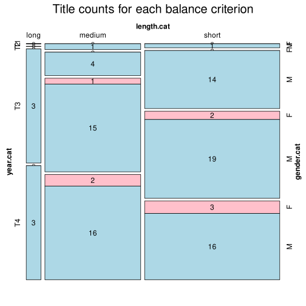

Click on a column heading to sort. Click on a text identifier to read the text (may not work in older browsers).
| Identifier | Encoding | Pages | Words | (Size) | Date (Slot) | Title | Author | Sex | Reprints |
|---|---|---|---|---|---|---|---|---|---|
| SRP18520 |
eltec-1 | 204 | 44207 | (short) | (T1) | Два идола | Атанацковић, Богобој (1826-1858) | M | low |
| SRP18590 |
eltec-1 | 332 | 97481 | (medium) | 1855-1859 (T1) | Ђурађ Бранковић | Игњатовић, Јаков (1822-1889) | M | low |
| SRP18620 |
eltec-1 | 97 | 20858 | (short) | 1862 (T2) | Једна женидба | Игњатовић, Јаков (1822-1889) | M | high |
| SRP18630 |
eltec-1 | 256 | 88117 | (medium) | 1860 1863 (T2) | Милан Наранџић | Игњатовић, Јаков (1822-1889) | M | high |
| SRP18631 |
eltec-1 | 282 | 66347 | (medium) | 1863 (T2) | Кочина крајина | Ђорђевић, Владан (1844-1930) | M | low |
| SRP18690 |
eltec-1 | 116 | 36543 | (short) | 1869 (T2) | Гмунденско језеро | Ђорђевић, Владан (1844-1930) | M | low |
| SRP18691 |
eltec-1 | 136 | 31620 | (short) | 1869 (T2) | Какав је ко онако му и бива | Поповић, Панта (1843-1918) | M | low |
| SRP18730 |
eltec-1 | 361 | 64724 | (medium) | 1874 (T2) | Калуђер | Суботић, Јован (1817-1886) | M | low |
| SRP18740 |
eltec-1 | 52 | 14247 | (short) | 1874 (T2) | Сељаци | Јакшић, Ђура (1832-1878) | M | high |
| SRP18750 |
eltec-1 | 156 | 48661 | (short) | 1875 (T2) | Васа Решпект | Игњатовић, Јаков (1822-1889) | M | high |
| SRP18751 |
eltec-1 | 11035 | (short) | 1875 (T2) | Глава шећера | Глишић, Милован (1847-1908) | M | high | |
| SRP18752 |
eltec-1 | 167 | 29321 | (short) | 1875 (T2) | Без оца и мајке | Радуловић, Пера (????-????) | M | low |
| SRP18760 |
eltec-1 | 103 | 29793 | (short) | 1876 (T2) | Чича Тима | Јакшић, Ђура (1832-1878) | M | low |
| SRP18780 |
eltec-1 | 235 | 57165 | (medium) | 1878 (T2) | Пред зору | Mihajlović, Branko [Љубиша Бранковић] (1857-1918) | M | low |
| SRP18790 |
eltec-1 | 110 | 18012 | (short) | 1879 (T2) | Јурмуса и Фатима или Турска сила сама себе једе | Милићевић, Милан Ђ. (1831-1908) | M | low |
| SRP18791 |
eltec-1 | 227 | 32447 | (short) | 1879 (T2) | Пастир краљ или Ослобођење Србије | Барунчић, Коста (????-????) | M | low |
| SRP18800 |
eltec-1 | 241 | 51104 | (medium) | 1880 (T3) | Драгоцена огрлица | Комарчић, Лазар (1833-1909) | M | low |
| SRP18810 |
eltec-1 | 80 | 10095 | (short) | 1881 (T3) | Десет пара | Милићевић, Милан Ђ. (1831-1908) | M | low |
| SRP18821 |
eltec-1 | 80 | 10970 | (short) | 1882 (T3) | Каваљер Лаза | Ђорић, Никола В. (1859-1913) | M | low |
| SRP18840 |
eltec-1 | 34 | 18652 | (short) | 1884 (T3) | Из учитељичког живота | Гавриловић, Драга (1854-1917) | F | low |
| SRP18860 |
eltec-1 | 257 | 33284 | (short) | 1886 (T3) | Омер Челебија | Милићевић, Милан Ђ. (1831-1908) | M | low |
| SRP18870 |
eltec-1 | 36 | 19350 | (short) | 1887 (T3) | Бабадевојка | Гавриловић, Драга (1854-1917) | F | low |
| SRP18871 |
eltec-1 | 385 | 62835 | (medium) | 1887 (T3) | Мој кочијаш | Комарчић, Лазар (1833-1909) | M | low |
| SRP18880 |
eltec-1 | 125 | 44760 | (short) | 1888 (T3) | Сањало | Поповић-Шапчанин, Милорад (1847-1895) | M | low |
| SRP18881 |
eltec-1 | 98 | 34956 | (short) | 1888 (T3) | Дух времена сад је таки! | Марковић Адамов, Павле (1855-1907) | M | low |
| SRP18882 |
eltec-1 | 271 | 61971 | (medium) | 1888 (T3) | Шумарева ћерка | Поповић, Стеван В. (1845-1918) | M | low |
| SRP18890 |
eltec-1 | 96 | 50732 | (medium) | 1889 (T3) | Девојачки роман | Гавриловић, Драга (1854-1917) | F | low |
| SRP18891 |
eltec-1 | 219 | 34683 | (short) | 1889 (T3) | Борци | Веселиновић, Јанко М. (1862-1905) | M | high |
| SRP18892 |
eltec-1 | 702 | 140344 | (long) | 1889 (T3) | Силазак с престола | Тодоровић, Пера (1852-1907) | M | low |
| SRP18910 |
eltec-1 | 106 | 23508 | (short) | 1891 (T3) | Иконија везирова мајка | Мијатовић, Чедомиљ (1842-1932) | M | low |
| SRP18911 |
eltec-1 | 160 | 33463 | (short) | 1891 (T3) | Даница | Јевтића, Стевана Ј. (1854-1904) | M | low |
| SRP1892 |
eltec-1 | 253 | 55285 | (medium) | 1892 (T3) | Бакоња фра-Брне | Матавуљ, Симо (1852-1908) | M | high |
| SRP18920 |
eltec-1 | 239 | 41500 | (short) | 1892 (T3) | Рајко од Расине | Мијатовић, Чедомиљ (1842-1932) | M | low |
| SRP18921 |
eltec-1 | 87 | 10333 | (short) | 1892 (T3) | Србин и Хрватица или љубав и народност | Рогић, Душан (1855-????) | M | low |
| SRP18930 |
eltec-1 | 184 | 36654 | (short) | 1893 (T3) | Прве жртве | Гавриловић, Андра (1864-1929) | M | low |
| SRP18932 |
eltec-1 | 190 | 41635 | (short) | 1893 (T3) | Сељанка | Веселиновић, Јанко М. (1862-1905) | M | high |
| SRP18933 |
eltec-1 | 303 | 78820 | (medium) | 1892/1893 (T3) | Смрт Карађорђева | Тодоровић, Пера (1852-1907) | M | high |
| SRP18934 |
eltec-1 | 251 | 36400 | (short) | 1893 (T3) | Један разорен ум | Комарчић, Лазар (1833-1909) | M | high |
| SRP18935 |
eltec-1 | 181 | 28468 | (short) | 1893 (T3) | Робињица Злата | Јовичић, Живојин (1837-1908) | M | low |
| SRP18940 |
eltec-1 | 185 | 40034 | (short) | 1894 (T3) | Радетића Мара | Сретеновић, Михаило (1866-1934) | M | low |
| SRP18941 |
eltec-1 | 420 | 94338 | (medium) | 1894 (T3) | Поп Ћира и поп Спира | Сремац, Стеван (1855-1906) | M | high |
| SRP18942 |
eltec-1 | 164 | 37860 | (short) | 1894 (T3) | Синовац | Радовић, Димитрије (????-????) | M | low |
| SRP18950 |
eltec-1 | 185 | 42963 | (short) | 1895 (T3) | Ивкова слава | Сремац, Стеван (1855-1906) | M | high |
| SRP18951 |
eltec-1 | 400 | 71824 | (medium) | 1895 (T3) | Кажњено неверство | Светолик, Владимир | M | low |
| SRP18960 |
eltec-1 | 189 | 29862 | (short) | 1896 (T3) | Господа сељаци | Костић, Тадија П. (1863-1927) | M | low |
| SRP18961 |
eltec-1 | 104 | 20478 | (short) | 1896 (T3) | Неједнака браћа | Мамузић, Стеван (????-????) | M | low |
| SRP18962 |
eltec-1 | 89 | 11402 | (short) | 1896 (T3) | Конац дело краси | Ђурић, Душан (????-????) | M | low |
| SRP18963 |
eltec-1 | 93693 | (medium) | 1896 (T3) | Хајдук Станко | Веселиновић, Јанко М. (1862-1905) | M | high | |
| SRP18964 |
eltec-1 | 276 | 51288 | (medium) | 1896 (T3) | Деспотова властела | Гавриловић, Андра (1864-1929) | M | low |
| SRP18965 |
eltec-1 | 206 | 55063 | (medium) | 1896 (T3) | Неимари | Петровић, Коста (1858-1928) | M | low |
| SRP18966 |
eltec-1 | 239 | 74956 | (medium) | 1896 (T3) | Назарени | Томић, Јаша, 1856-1922 | M | low |
| SRP18970 |
eltec-1 | 349 | 71448 | (medium) | 1897 (T3) | Грофица Агнеша Јанковић | Матијашић, Стеван М. (????-????) | M | low |
| SRP18971 |
eltec-1 | 64993 | (medium) | 1897 (T3) | Горски цар | Ранковић, Светолик (1863-1899) | M | high | |
| SRP18980 |
eltec-1 | 53 | 13848 | (short) | 1898 (T3) | Швабица | Лазаревић, Лаза К. (1851-1891) | M | high |
| SRP18990 |
eltec-1 | 208 | 45062 | (short) | 1899 (T3) | Кнез Градоје од Орлова Града | Мијатовић, Чедомиљ (1842-1932) | M | low |
| SRP18991 |
eltec-1 | 68 | 10080 | (short) | 1899 (T3) | Увела ружа | Станковић, Борисав (1876-1927) | M | high |
| SRP18992 |
eltec-1 | 128 | 31258 | (short) | 1899 (T3) | Лутајуће душе | Јањић, Велислав (????-????) | M | low |
| SRP18993 |
eltec-1 | 209 | 58821 | (medium) | 1899 (T3) | Сеоска учитељица | Ранковић, Светолик (1863-1899) | M | high |
| SRP19000 |
eltec-1 | 263 | 57371 | (medium) | 1900 (T4) | Порушени идеали | Ранковић, Светолик (1863-1899) | M | high |
| SRP19001 |
eltec-1 | 329 | 69511 | (medium) | 1900 (T4) | Миланово школовање | Тутуновић, Радојица В. (????-????) | M | low |
| SRP19002 |
eltec-1 | 92 | 20414 | (short) | 1900 (T4) | Крвави злочин у браку без љубави | Кара-Радовановић, Павле (????-????) | M | low |
| SRP19010 |
eltec-1 | 116 | 34960 | (short) | 1901 (T4) | Гила | Поповић, Тодор Љ. (1870-1957) | M | low |
| SRP19011 |
eltec-1 | 124 | 24883 | (short) | 1901 (T4) | Причек Цара Душана у Дубровнику год. 1349. | Вулетић-Вукасовић, Вид (1853-1933) | M | low |
| SRP19012 |
eltec-1 | 107 | 20244 | (short) | 1901 (T4) | Ђул-Марикина прикажња | Димитријевић, Јелена (1862–1945) | F | low |
| SRP19021 |
eltec-1 | 322 | 63780 | (medium) | 1902 (T4) | Општинско дете | Нушић, Бранислав (1864-1938) | M | high |
| SRP19022 |
eltec-1 | 52 | 10109 | (short) | 1902 (T4) | Покојникова жена | Станковић, Борисав (1876-1927) | M | high |
| SRP19023 |
eltec-1 | 97 | 25302 | (short) | 1902 (T4) | Славко | Ранковић, Драгутина Ј. (1882-1956) | M | low |
| SRP19024 |
eltec-1 | 204 | 59480 | (medium) | 1902 (T4) | Харамбаша Мицко | Тасић, Димитрије С. (????-????) | M | low |
| SRP19025 |
eltec-1 | 111 | 19747 | (short) | 1902 (T4) | Страдија. 1 | Домановић, Радоје М. (1873-1908) | M | high |
| SRP19030 |
eltec-1 | 181 | 37860 | (short) | 1903 (T4) | Прво весеље | Костић, Тадија П. (1863-1927) | M | low |
| SRP19031 |
eltec-1 | 339 | 54818 | (medium) | 1903 (T4) | Две сестре или Самоубиство једне шваље | Савић, Божа (1862-1927) | M | low |
| SRP19040 |
eltec-1 | 246 | 53009 | (medium) | 1904 (T4) | Хаџи-Ђера | Илић, Драгутин Ј. (1858–1926) | M | high |
| SRP19041 |
eltec-1 | 53434 | (medium) | 1904 (T4) | За крухом | Ћипико, Иво (1869-1923) | M | high | |
| SRP19050 |
eltec-1 | 145 | 22848 | (short) | 1905 (T4) | Просиоци | Комарчић, Лазар (1833-1909) | M | low |
| SRP19051 |
eltec-1 | 170 | 24155 | (short) | 1905 (T4) | Женидба Пере Карантана | Ћоровић, Светозар (1875-1919) | M | low |
| SRP19060 |
eltec-1 | 296 | 81145 | (medium) | 1906 (T4) | Новац | Талетов, Пера С. (1875-1955) | M | low |
| SRP19061 |
eltec-1 | 222 | 60999 | (medium) | 1906 (T4) | Хаџи-Диша | Илић, Драгутин Ј. (1858–1926) | M | high |
| SRP19062 |
eltec-1 | 180 | 40431 | (short) | 1906 (T4) | Злочин једне свекрве | Јездић, Коста Д. (1853-1930) | M | low |
| SRP19070 |
eltec-1 | 148 | 25421 | (short) | 1907 (T4) | Фати-султан | Димитријевић, Јелена (1862–1945) | F | low |
| SRP19071 |
eltec-1 | 193 | 51414 | (medium) | 1907 (T4) | Зона Замфирова | Сремац, Стеван (1855-1906) | M | high |
| SRP19080 |
eltec-1 | 317 | 64727 | (medium) | 1908 (T4) | Модерно робље | Петровић, Бошко Ст. (1869-1913) | M | low |
| SRP19090 |
eltec-1 | 161 | 42271 | (short) | 1909 (T4) | Пауци | Ћипико, Иво (1869-1923) | M | high |
| SRP19091 |
eltec-1 | 108 | 34074 | (short) | 1909 (T4) | Препорођај | Динић, Сретен (1875-1949) | M | low |
| SRP19100 |
eltec-1 | 249 | 81827 | (medium) | 1910 (T4) | Дошљаци | Ускоковић, Милутин (1884-1915) | M | high |
| SRP19101 |
eltec-1 | 254 | 67341 | (medium) | 1910 (T4) | Нечиста крв | Станковић, Борисав (1876-1927) | M | high |
| SRP19102 |
eltec-1 | 406 | 121441 | (long) | 1910 (T4) | Радиша или какав нам учитељ треба на селу | Миодраговић, Јован (1854-1926) | M | low |
| SRP19110 |
eltec-1 | 36 | 12023 | (short) | 1911 (T4) | Потрошене речи | Ускоковић, Милутин (1884-1915) | M | low |
| SRP19120 |
eltec-1 | 295 | 94927 | (medium) | 1912 (T4) | Нове | Димитријевић, Јелена (1862–1945) | F | low |
| SRP19121 |
eltec-1 | 149 | 21144 | (short) | 1912 (T4) | Беспуће | Милићевић, Вељко М. (1886-1929) | M | high |
| SRP19130 |
eltec-1 | 296 | 60464 | (medium) | 1913 (T4) | Калуђер и хајдук | Новаковић, Стојан (1842-1915) | M | high |
| SRP19131 |
eltec-1 | 125 | 29543 | (short) | 1913 (T4) | У фронт | Ђорђевић, Владан (1844-1930) | M | low |
| SRP19132 |
eltec-1 | 199 | 47623 | (short) | 1913 (T4) | Јарани | Ћоровић, Светозар (1875-1919) | M | low |
| SRP19140 |
eltec-1 | 318 | 53474 | (medium) | 1914 (T4) | Чедомир Илић | Ускоковић, Милутин (1884-1915) | M | high |
| SRP19141 |
eltec-1 | 46 | 10399 | (short) | 1914 (T4) | Кад шуме таласи | Ђуричић, Младен Ст. (1889-1987) | M | low |
| SRP19180 |
eltec-1 | 144 | 32555 | (short) | 1918 (T4) | Пре среће | Јанковић, Милица (1881-1939) | F | low |
| SRP19190 |
eltec-1 | 256 | 51973 | (medium) | 1919 (T4) | Ђакон Богородичине цркве | Секулић, Исидора (1877-1958) | F | high |
| SRP19192 |
eltec-1 | 128 | 38705 | (short) | 1919 (T4) | У ћелијама | Ћоровић, Светозар (1875-1919) | M | low |
| SRP19200 |
eltec-1 | 120 | 17942 | (short) | 1920 (T4) | Један од многих | Шишковић, Драгомир (????-????) | M | low |
| SRP19201 |
eltec-1 | 730 | 155059 | (long) | 1920 (T4) | Деветсто петнаеста | Нушић, Бранислав (1864-1938) | M | high |
| SRP19203 |
eltec-1 | 798 | 156268 | (long) | 1920 (T4) | Легија смрти | Суботић, Каменко (1870-1932) | M | low |